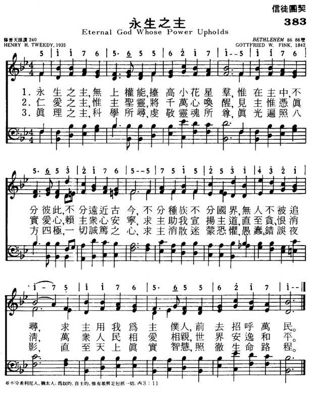
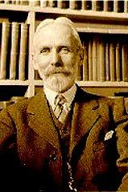
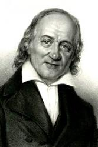

|
|
颂主新歌 |
|
1 Eternal God, whose power upholds 2 O God of love, whose Spirit wakes 3 O God of truth, whom science seeks 4 O God of beauty, oft revealed 5 O God of righteousness and grace, |
1.永生之主，无上权能，抬高小花星群，
|
|
https://www.mred365.cn/szxg/7386.html  Eternal God, Whose Power Upholds
|
|
|
|
|


All Nature's Works His Praise Declare (Bethlehem) https://youtu.be/r9TPjU0W25o -
Eternal God, Whose Power Upholds (Forest Green)
https://www.youtube.com/watch?v=YjZN1CdaoH4
| Text: | Eternal God, Whose Power Upholds |
| Author: | Henry Hallam Tweedy |
| Short Name: | Henry Hallam Tweedy |
| Full Name: | Tweedy, Henry Hallam, 1868-1953 |
| Birth Year: | 1868 |
| Death Year: | 1953 |

Born: August 5, 1868,
Binghamton, New York.
Died: April 11, 1953, Brattleboro, Vermont.
Buried: Mountain View Cemetery, New Fairfield, Connecticut.
Tweedy attended
Phillips Andover Academy, Yale University (BA & MA), Union
Theological Seminary, and the University of Berlin. Ordained a
Congregationalist minister in 1898, he pastored at Plymouth Church,
Utica, New York (1892-1902), and South Church, Bridgeport, Connecticut
(1902-09). He then became Professor of Homiletics at Yale Divinity
School (1909-37). He taught liturgy, music, and the arts, and was
interested in religious architecture. His works include:
The Minister and His Hymnal
Christian Worship and Praise, 1939
| Tune: | BETHLEHEM (Fink) (SERAPH) |
| Composer: | Gottfried Wilhelm Fink |
Tune Information
| Title: | BETHLEHEM (Fink) |
| Composer: | Gottfried W. Fink (1842) |
| Meter: | 8.6.8.6 D |
| Incipit: | 51176 56556 21715 |
| Key: | B♭ Major |
| Copyright: | Public Domain |
| Short Name: | Gottfried W. Fink |
| Full Name: | Fink, Gottfried Wilhelm, 1783-1846 |
| Birth Year: | 1783 |
| Death Year: | 1846 |
Rv Gottfried
Wilhelm Fink PhD Germany 1783-1846.

Born at Sulza, Thuringa, Germany, he was a German composer, music theorist, poet, and a protestant clergyman. From 1804-1808 he studied at the University of Leipzig, where he joined the Corps Lusatia, where he made his first attempts at composition and poetry. In 1811 he was appointed Vicar in Leipzig for some years, where he also founded an educational institution, leading it until 1829. Around 1800 he worked for the “Allgemeine musikalische Zeitschrift” (General musical mazazine). In 1827 he became the magazine's editor-in-chief for 15 years. From 1838 he was a lecturer at the University of Leipzig. In 1841 he became a Privatdozent of musicology at the university. That year he became a member of the Prussian Academy of Arts in Berlin, and a year later was appointed university Music Director. He was highly esteemed throughout his life as a music theorist and composer, receiving numberous honors and awards, both at home and abroad. The Faculty of Philosophy at Leipzig University awarded him an honorary doctorate. He wrote mostly Songs and ballads and collected songs as well. He authored important words on music theory and history, but was best known as editor of the “Musikalischer Hausschatz der Germans”, a collection of about 1000 songs and chants, as well as the “Deutsche Liedertafel” (German song board), a collection of polyphonic songs sung by men. He died at Leipzig, Saxony.
John Perry
History of Hymns: "O Spirit of the Living God"
"O Spirit of the Living God"
Henry H. Tweedy
UM Hymnal, No. 539
 |
|
Henry H. Tweedy |
O Spirit of the living God,
though light and fire divine,
demand upon thy church once more,
and make it truly thine.
Fill it with love and joy and power,
with righteousness and peace;
till Christ shall dwell in human hearts,
and sin and sorrow cease.
Henry Hallam Tweedy (1868-1953) hailed from the northeast, born in
Binghamton, N.Y. He was granted degrees from Phillips Andover Academy, Yale
University, Union Theological Seminary and the University of Berlin.
A Congregational pastor, he served churches in New York and Connecticut, and
later taught practical theology from 1909-1937 at Yale Divinity School.
He co-authored several books, including Training the Devotional
Life (1919) and Religious Training in School and
Home (1917). His most important contribution, however, was as
editor of the hymnal Christian Worship and Praise (1939).
In addition to editing a hymnal, Tweedy published a practical volume, The
Minister and His Hymnal, and won several hymn contests sponsored by the Homiletic
Review and the Hymn Society of America.
Hymnologist Albert Bailey notes that Tweedy’s “courses led him to study with
his students various hymnals in common use and to appraise hymns for their
religion, their poetry, and their value in public services of worship.” Out
of this Tweedy began to compose his own hymn texts.
The United Methodist Hymnal contains one of Tweedy’s three main
hymn texts in use today, the other two being “Eternal God, Whose Power
Upholds” (1928), winner of the Hymn Society of America’s missionary hymn
competition, and “O Gracious Father of Mankind” (1925).
Methodist hymnologist Guy McCutchan quotes Tweedy, who said he composed “O
Spirit of the Living God” because “some of the old Pentecostal hymns were to
me unsatisfactory, and I was eager to interpret the symbolism of the story
in Acts in a way that modern men could understand and sincerely mean.”
The hymn was first published in the Methodist Hymnal (1935)
after Halford E. Luccock, the author’s friend, sent it to the hymnal
committee.
The text is an exposition of Acts 2, a passage focused on Pentecost. Stanza
one is a petition for “light and fire,” primary images of the Spirit at
Pentecost, to “descend upon the church once more.” The petitions continue as
the author asks the Spirit to “make [the church] truly thine,” “Fill [the
church] with love and joy and power, with righteousness and peace.”
Stanza two begins with an imperative verb, “Blow, wind of God!”—a request
for wisdom “until our minds are free from mists of error.” The second half
of the hymn petitions the Spirit to “Burn, winged fire!”—a request for
inspiration of “lips with flaming love and zeal, to preach. . . . ”
Stanza three continues with imperative petitions: “Teach us to utter living
words of truth”—a request for insight that will lead to an ecumenical vision
when all shall “blend their creeds in one, and earth shall form one family.
. . . ”
The final stanza answers the question, “So what?”
The composer makes these petitions so that “we know the power of Christ who
came this world to save. . . . ” If these petitions are fulfilled, “true
holiness” will make “thy children whole” and we will be “perfected by thee .
. . [to] reach creation’s glorious goal!”
Interestingly, the language of Christian perfection indicates a Wesleyan
direction for the culmination of the hymn.
The Rev. Carlton Young, editor the UM Hymnal, notes: “This is
one of a few social gospel hymns written in the 1930s that has survived.” It
follows in the mold established by Baptist theologian Walter Rauschenbusch
(1861-1918) and expressed so beautifully in hymns like Congregationalist
Washington Gladden’s “O Master Let me Walk with Thee” (1879) and the
Methodist Frank Mason North’s “Where Cross the Crowded Ways of Life” (1903).
One additional note—Tweedy is credited with a quotation that often appears
in association with his name: “Fear is the father of courage and the mother
of safety.”
Dr. Hawn is professor of sacred music at Perkins School of Theology, SMU.
https://www.umcdiscipleship.org/resources/history-of-hymns-o-spirit-of-the-living-god
Eternal God, Whose Power Upholds
Text: Henry Hallam Tweedy (1868–1953), 1929
- Born in Binghamton, New York and trained as a Congregationalist minister at Yale University and Union Theological Seminary
- Pastored churches in Utica, New York and Bridgeport, Connecticut
- Became Professor of Practical Theology at the Yale Divinity School in 1909
- Studied hymns and their use in worship as part of his professorship, leading him to write his own hymns
- This text was submitted to a 1928 contest by Hymn Society of America for the “best missionary hymn”, and eventually won
- Later edited the hymnal Christian Worship and Praise, published in 1939
Tune: Traditional English, 1708
- Originally a folk tune commonly sung as a ballad, “The Ploughboy’s Dream”
- Harmonized and arranged into a hymn tune by Ralph Vaughan Williams in 1906
- Initial publication in The English Hymnal used it for “O Little Town of Bethlehem”
- Today we mainly know it from its association with “I Sing the Almighty Power of God”
- The name Forest Green comes from the name of the village in Surrey, England where Vaughan Williams heard it sung
-
Although explicitly written as a “missionary hymn”, the text is really applicable to all Christians everywhere. What does this hymn teach you about how to share the gospel in your own personal life?
- Verse 1: there are no racial or other divisions in God – we are all heirs of Christ (see Galatians 3:28-29)
- Verse 2: the potential for love exists in every heart, there is no one beyond hope. It’s the work of the Holy Spirit, not us, that changes hearts and brings peace.
- Verse 3: as God gave us our minds and intellect, education and teaching are necessary parts of evangelism. A truly living faith must be an informed faith that guides everything we do.
- Verse 4: God is revealed not just in the beauty of nature, but in our own creations as well. As Christians, our lives should be made beautiful in every way, beyond pure aesthetics.
-
Verse 5: to truly spread the gospel, we must live as Christ lived and
follow his example in everything we do.
- “Till Christ has formed in all mankind” – are we forming Him in our lives, or is He forming us?
-
While Forest Green is a popular tune for this hymn, it’s by no means the only choice and many hymnals use other tunes instead.
Do you think this tune is a good fit for the text? Why or why not?
What about the tune Materna (usually seen with “O Beautiful For Spacious Skies”)?-
Forest Green is an upbeat tune that retains much of
its “folk” feel.
- The text too is upbeat, looking forward to Christ bringing about his church on earth.
- The consistent beat has a “strolling” feel to it, as if we were walking out to spread the Good News.
- On the other hand, maybe the tune is too sickly sweet for a text that talks about “greed and hate”, “gloom of error’s night”, and “sinfulness that shuts our hearts”
-
Materna was originally written for a text “O Mother,
Dear Jerusalem”
- These days, of course, it’s really only seen in a patriotic context for parades, etc.
- This tune would lend a more majestic feel to the text, if people can forget the usual “America” words.
- But perhaps the patriotic overtones are too much for it to be truly effective.
- There are many other tune choices besides these, one of which is Ellacombe – interesting because of its use for both 8.6.8.6D and 7.6.7.6D texts (see “Hail To The Lord’s Anointed”).
-
Forest Green is an upbeat tune that retains much of
its “folk” feel.
https://www.hymnsofthefaith.study/session-02/week-06/notes.html#eternal_god_whose_power_upholds